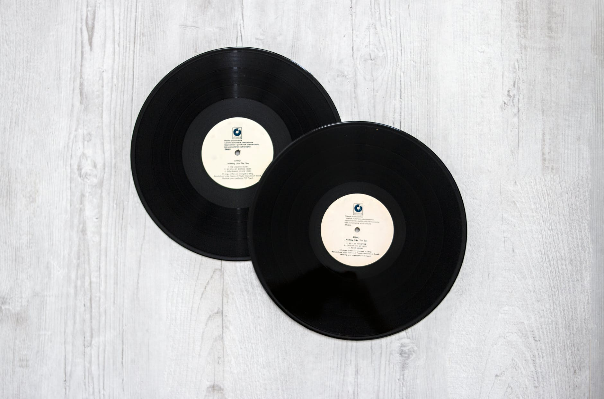

Vinyl
According to studies, the majority of people have positive experiences when listening to music; whether it’s sad, or upbeat music.
During times of loss, for example, listening to sad music that describes what you’re feeling can be compared to listening to an empathetic friend who truly understands what you’re going through. On the other hand, listening to upbeat music is a wonderful way to improve your mood and boost your happiness.
Music has also been used as therapy for a long time, helping people to cope with pain, manage stress and improve memory. In fact, some researchers found that patients experienced less pain and anxiety when they listened to music before, during, or after surgery. To remind us of the Everyday Power of music and how it heals our souls, we’ve prepared this collection of inspirational, beautiful, and funny music quotes, music sayings, and music proverbs.
We hope you’ll enjoy reading these music quotes as much as we enjoyed compiling them.